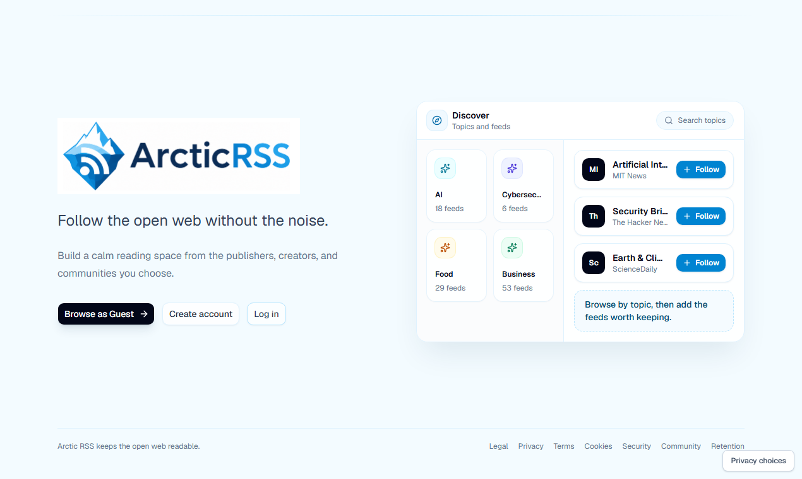
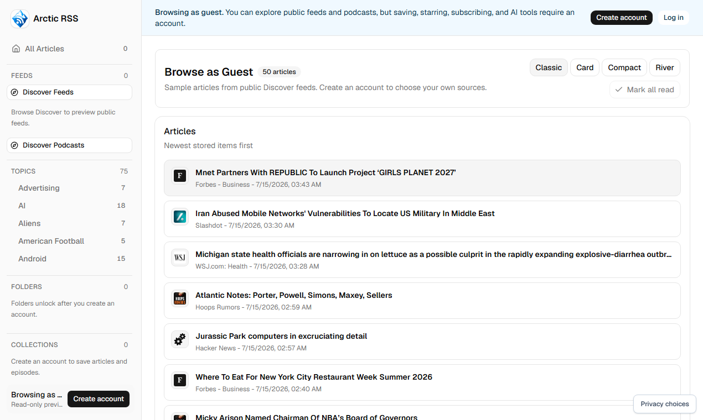
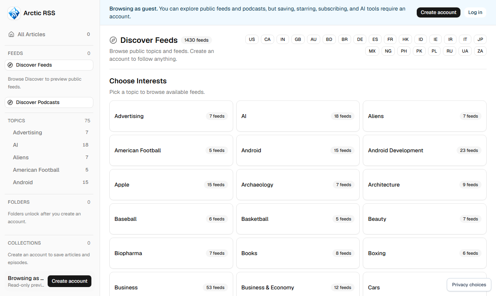
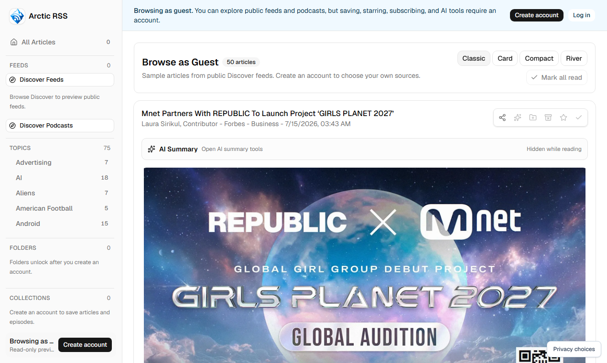
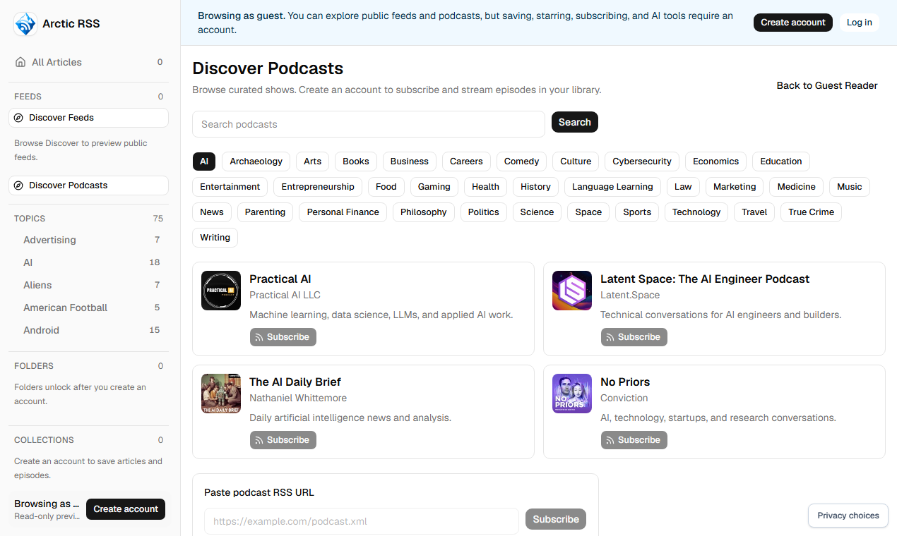

Arctic RSS Product Hunt asset review
Open after the approved capture command completes. Validate dimensions/checksums before human review.





Open after the approved capture command completes. Validate dimensions/checksums before human review.




